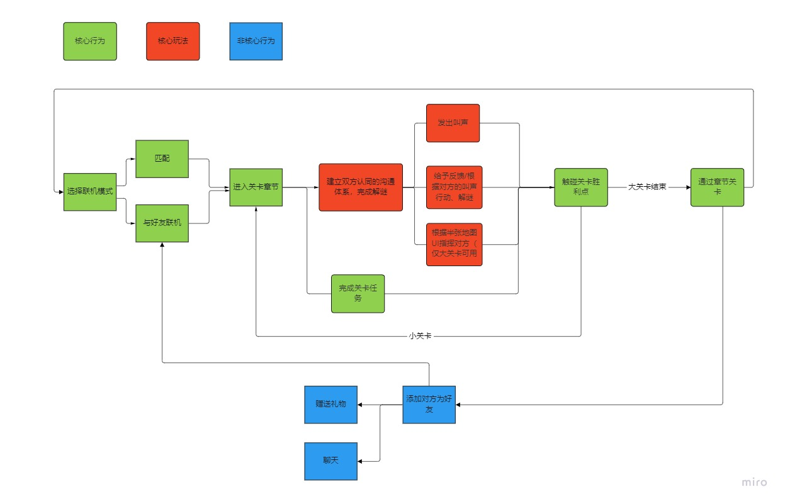

Meet & Meat
I am responsible for overall game system design and gameplay development, partial level mechanism design and implementation, online function implementation.
Introduction
Inspiration:
During the game jam week of Game Design Studio, a course on Nonverbal Communication, I was inspired by the experimental idea of creating a new language system in a crowd that a classmate had mentioned. This led to the idea of creating a game experience in which two players escape a maze at the same time with the aim of establishing their own communication mechanism in a nonverbal way.

Game Jam Requirement
Game Description:
This is a 3D two-player cooperative puzzle game. The core gameplay is based on two players communicating in a non-verbal way (i.e. through unconventional ways of communication other than everyday spoken communication and text) and building their own communication mechanism to exchange information in order to solve the puzzle together.
Design Purpose
- To provide players a unique adventure and warm social experience by establishing unique communication mechanisms with others during the game.
- Expect emergent communication and emergent gameplay happen in the game.
Target Audience：
- Players who do not speak each other's language, but are happy to cooperate or socialize;
- Cooperative puzzle game fans;
- Couples/friends with light gaming needs.


{kind=link}
Design Process
Initial Version of The Gameplay:
This version of the prototype includes limited regular verbal communication, as well as non-verbal communication. Each player will start the game with 4 non-verbal badges ( no textual meaning) and 2 verbal badges in their hands.
Two players have the same four non-verbal badges, and the badges do not have any meaning at the beginning, so the two players need to gradually determine the meaning of each badge (forward/backward/left/right) by sending the badges to each other and trial and error. 2 verbal badges (right/wrong) reduce the difficulty of the game to some extent.
In order to give players the motivation to establish a communication system, Player A and Player B each start the game from the two corners of the maze, without seeing each other at the beginning of the game. In order to explore the maze smoothly, the two players can only use the communication mechanism.
To somewhat reduce the difficulty of the game and to provide asymmetric information to facilitate communication motivation, each player can see the other player's half of the real-time maze map (hereinafter referred to as the "half map", i.e., Player A can see Player B's half of the maze map to give feedback on his behavior. By observing the actions of another player on the map, players can send feedback to help build a communication system.
Mechanisms:
- Each game has a turn/time limit. If both players do not reach the center of the maze within the turn/time limit, the game will lose.
- At the beginning of the game, 4 pictures of non-verbal badges will be randomly assigned.
- At the start of each turn, Player A sends a non-verbal badge to Player B. Player B receives the signal and makes an action, Player A sends a feedback badge signal based on the real-time map of the half of the field where Player B is, and Player A ends the turn. Player B then repeats Player A's actions
- When a player clicks on a badge to send a signal, the corresponding image will appear in the center of another player's screen. Players can give feedback or instruction needs to the other player in this way.
Half Map
Prototype Demo （1min46s）
Gameplay Focusing On Non-verbal Communication.
Because I wanted to further experiment and verify the feasibility of non-verbal communication gameplay, I changed the previous gameplay framework in the course Game Research Prototypes and Game Testing and designed the gameplay around a completely non-verbal communication mechanism.
Version 0：
Number of players：2.
Winning Conditions：Touch the level victory point within the time limit.
Losing condition: The game ends when the player has not touched the victory point at the end of the countdown.
Players' Goals：
- Establish communication mechanism
- Solve the puzzle within the time limit and touch the level victory point (a piece of ham meat)
Two players take on the role of two somewhat differentiated puppies and start the game at opposite ends of a large maze map, where players cannot see each other.
Due to the testing process of the initial version, it was discovered that meaningless cards are somewhat disruptive to the players' communication process and that visual cards may not be conducive to building emergent communication when the subsequent mechanics grow.
Inspired by the game Journey, we changed the core communication mechanism in the communication system to use sound to communicate. Because sounds are easier to build emergent systems, meaningless sounds can be utilized in more ways, and players are less likely to tie a sound to an action in a fixed way.
Therefore, in order to allow players to focus on better nonverbal communication and to generate the possibility of emergent communication, the mechanism of nonverbal communication is carried out in the form of sounds.
When encountering a puzzle or a puzzle clue, one player may choose a barking sound to convey a message to the other player by some means (e.g., rhythmically vocalizing).
In the beginning, the player's sounds are not given meaning, and the two players need to gradually give meaning and agree through trial and error and communication.
During the game, players can still use only the "half map" displayed to make a sound to give each other instructions.
In order to avoid players exploring alone, traversing the path of the maze, improve the cost of trial and error of players acting alone, and improve the motivation of players to communicate, this version of the maze, players A and B are each set up with three forks, each with a jumping platform, with a damage volume below the platform touching that is dead.
The "half map" in this version
Branching path
{kind=link}
Version 1.0：
The following points can be found in the testing of version 0:
-
Highlights:
- Added a mechanism to increase the difficulty, to a certain extent, increased the fun of players when exploring. It also raises the cost of exploration for players.
- Players have fun with the mechanics of communicating using barking.
-
Lowlights:
- No sound differentiation is made, and players can easily confuse each other's voices.
- The large maze is not conducive to build a base consensus
- Players still lack the motivation to communicate and cooperate.
The following changes were made based on the results of the version 0 playtest.
- A timer function is introduced. Prompted by the time, players will have a certain motivation to cooperate.
- Iterate the level system into a flow of 4 consecutive mini-levels + 1 major level. The first 4 mini-levels set up simple puzzles, such as conveying numbers, to help build consensus.
- Add long press, short press different vocalization, and two dogs voice differentiation function. Help players to distinguish each other's voices and better establish emergent communication.
- Players will be penalized to a certain extent for making a wrong attempt to solve the puzzle - reducing the time left in the countdown
Preview of The Mini-Level
The test was conducted with mini-levels and the timer was set to 5 minutes, with 100 seconds deducted as a penalty each time the player made a wrong attempt. Before the game, players were informed of the need to establish a communication system and the goal (to get the meat). Playtest results:
-
Highlights:
- The timer facilitates players to generate communication motivation.
- Mini-levels make it easier to help players build a consensus on basic communication mechanisms.
- It solves the problem of sound differentiation and helps players to increase the possibility of diverse expressions.
-
Lowlights:
- Players still have difficulties in understanding the meaning of each other's vocalizations, and the level guidance needs to be optimized.
Video of the prototype after iteration
The prototype was then subjected to further system design and some commercialization considerations based on the test results.
{kind=link}
{kind=link}
{kind=link}